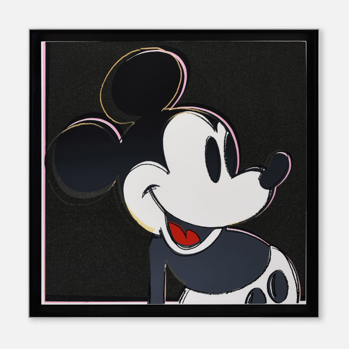
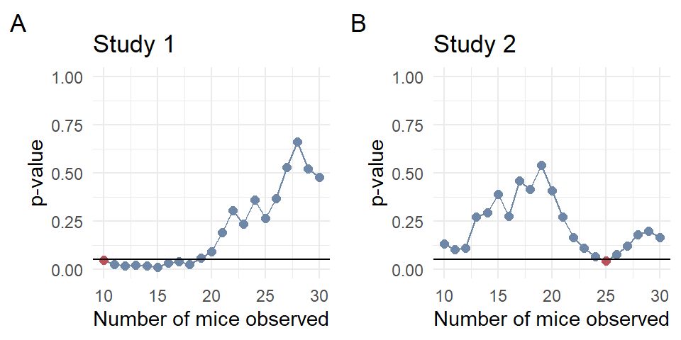

A 2018 sleep study increased its sample size until achieving statistical significance—a flawed practice known as p-hacking. This post explains why such practices are problematic, how they inflate false positives, and what that means for research credibility. Using data simulations, I highlight the pitfalls of data peeking and make the case for pre-specified statistical analysis plans in preclinical animal research.
Animal studies
Repeated inspection of data
p-values
Author
Simon Schwab
Published
August 18, 2024
Sleep is fascinating. We all sleep at night, but we don’t really know what is happening during this period. Sometimes we dream, sometimes we don’t. All in all, it is a bit of a mystery.
For some researchers, statistics is also a bit of a mystery. In 2018, a study titled “Regulation of REM and Non-REM Sleep by Periaqueductal GABAergic Neurons” was published in Nature Communications led by researchers from the University of California at Berkeley, Stanford University, and the University of Pennsylvania [1]. The study investigated rapid eye movement (REM) sleep in mice, which is a sleep phase characterized by vivid dreams and random movement of the eyes.
The only thing I know about R.E.M. is that it is also the name of a pretty good rock band; I grew up listening to their music. The very first album I bought as a kid was The Best of R.E.M. from 1991. For me, rock music and statistics go hand in hand, just like in Andy Field’s book Discovering Statistics Using R[2]. But now, let’s get back to our sleep study.
The good news is that we don’t need to understand anything about REM sleep, the brain, or the mouse. I probably don’t even know the difference between a mouse, a rat, and a hamster. The subject matter would only distract us. Let’s ignore everything in this paper except a tiny bit from the methods section.
Have you ever read just one sentence from a research study? It can be enough to make a case.
But first, let me say something else. In some prestigious journals, the methods and statistics section, the most relevant part for judging the validity and credibility of a study, is literally the small print at the end. This reminds me of what I wrote last time, that statistics is largely undervalued. Does anyone read that part?
Well, I do.
we continuously increased the number of animals until statistical significance was reached to support our conclusions. —p. 12, the small print
Peeping Tom
During my time at the University of Warwick in Coventry, I learned about the legend of “Peeping Tom.” In my version, however, Peeping Tom was a scientist obsessed with observing the p-value. The scientist would always take a glimpse at that darn p-value and how it changed over the course of the experiment as more data was added. In the end, the scientist was struck blind—end of the story.
Looking at the data again and again (and again) as more data are added and a statistical test is run each time, it is essentially a multiple-testing situation that would require some form of adjustment of the p-value. The reason is that this (bad) research practice considerably increases the chance that a statistically significant finding is a fluke.
Moreover, the study authors failed to report the non-significant results from all the statistical tests they conducted. They continued testing until they found a significant result, which they then reported. This selective reporting, based on the significance of the test, skews the interpretation of their findings. Despite the ongoing debate about when to adjust p-values, the situation here clearly calls for a “haircut” to their p-values [3].
In the Seven Sins in statistical significance testing [4], the practice of repeatedly looking at the p-value is described as the sin number three, the repeated inspection of data.
The solution to this problem is simple. It can be avoided by not analyzing the data until the study is completed and the planned sample size is reached. But I’m not sure that sample size is often planned in animal research.
Seven mice
In 2017, I applied for a grant for a neuroscience project that would analyze a large dataset of thousands of magnetic resonance imaging (MRI) scans. I was shortlisted for the second round, and after my presentation, a member of the committee asked me why I would not do my own MRI experiment to collect my own data. I replied that I did not want to do another N = 30 MRI study. The person replied that there were studies published in the journal Nature with only 7 mice. I had to laugh because I thought it was a joke, but nobody else was laughing.
Well, here we are, years later, thinking more deeply about this. In the present study, the sample size was not 7 mice. It was 12 mice, to be fair.

Andy Warhol, Myths: Mickey Mouse from 1981 (Halcyon Gallery)
In 2011, two comments about preclinical cancer research raised eyebrows [5,6]. Apparently, several landmark studies in high-impact journals that generated hundreds of secondary publications could not be verified by the pharmaceutical companies Bayer and Amgen. In these studies, investigators sometimes reported a single finding that supported their hypothesis, but it was often cherry-picked. This was the starting point for Tim Errington’s investigation of reproducibility in preclinical cancer research [7]. Reasons for irreproducibility in preclinical animal studies can include small sample sizes and thus low statistical power, as well as over-standardization of experiments [8]. After reading all all this, I’m not so surprised when another lab can’t confirm an exciting study finding from an animal experiment in a prestigious journal.
If a result cannot be repeated, what is it worth?
Reproducible animal studies require transparent reporting. The ARRIVE (Animal Research: Reporting of In Vivo Experiments) guidelines were initially developed in 2010 to improve the reporting of animal research, and version 2.0 was published in 2020 [9].
An exception to the rule
There are some exceptions where stopping a study early may be justified. But that’s a whole different ballgame. Such situations need to be predefined, and adequate statistical methods need to be used in the analysis. In clinical trials there is the term “interim analysis”, where an analysis is conducted before the end of the study and data collection. This can be very useful when a treatment is clearly beneficial or harmful compared to the control arm [10]. Then, the investigator can stop the study early. However, as I said, this is all very well planned and defined a priori in a study protocol and statistical analysis plan.
For example, the Cardiac Arrhythmia Suppression Trial (CAST) was a four-arm trial of three antiarrhythmic drugs versus placebo on the risk of sudden cardiac death [11]. Early in the CAST study, two arms (encainide and flecainide) were stopped because of excess mortality compared with the placebo arm.
In the present mouse study, however, the authors stopped the experiment because the p-value fell below the magical level of \(p \le 0.05\), which apparently signaled to them that they could publish their results and didn’t need to kill any more mice. If you do enough tests, you will always obtain a p-value less than the magical threshold.
I’m looking for an interruption. Do you believe? —I don’t sleep, I dream (song by R.E.M.)
I don’t believe in stopping this study early, and I don’t trust the results. However, I believe that the authors of the study did not want to cheat. They probably didn’t know any better. They thought the approach was okay, so they wrote it in the methods section. No statistician was on the list of authors, I guess, and no statistician reviewed the paper.
One last thought. When the authors of the study stopped the experiment, it was good for the next mouse whose life was saved. Unless the study was flawed.
Then all those mice would have been wasted.
The title of this post is a song by R.E.M.; the preview image of this post is a photo by Karsten Winegeart on Unsplash.
Just one more thing
Code
set.seed(2024)N =30# number of micestop =10:N # stop rulesk =10000# number of studiesps =array(NA, dim =c(k, length(stop)))# iterate across studies sfor (s in1:k) { y1 =rnorm(N) y2 =rnorm(N) c =1for (i in stop) { stat =wilcox.test(y1[1:i], y2[1:i], paired =TRUE) ps[s, c] = stat$p.value c = c +1 }}
I conducted a mouse study. I assumed that the planned sample size was \(N = 30\) animals. However, I peeped at the data already after testing 10 animals and then repeated the test after each additional animal until \(p \leq 0.05\) or the total sample size was reached. Since no animals were harmed in my experiment, I performed \(k = 10000\) of such studies.
In the mouse study, two measurements were obtained for each mouse. I sampled both observations from a normal distribution with a mean of 0 and a standard deviation of 1. Thus, the model behind the simulation assumed that there was no difference between the mice before and after exposure. Thus, any result I found was a fluke.
I performed the same test reported in the paper, a Wilcoxon signed-rank test, but that doesn’t really matter for making the case. You could make the case with any statistical significance test that successfully controls the type I error at 5% (falsely rejecting the null).
In total, I collected \(21 \times 10^{4}\) p-values (21 repeated inspections and 10000 studies).
Code
FP =sum(ps[,ncol(ps)] <=0.05)
I looked at the last p-value for each study, i.e., after data from the total of \(N = 30\) animals had been collected. I found that 452 out of 10000 studies were statistically significant, which is a type I error rate of 0.045. Thank God, the error was under control. So far, so good.
Code
# function peep() to get p value using repeated inspectionpeep <-function(x) { d =data.frame(t =NA, p =NA)# pick first p value that is below cutoffif (min(x) <=0.05) { i =which(x <=0.05)[1] # pick first p value that is below cutoff d$t = i d$p = x[i]# if no success pick last p value } else { d$t =length(x) d$p = x[length(x)] }return(d)}myp =apply(ps, 1, peep)myp =as.data.frame(t(array(unlist(myp), dim =c(2, k))))colnames(myp) =c("t", "p")
Now, the twist. I peeped at the other p-values. I picked the p-value as soon as it turned statistically significant and stopped the experiment. But when I was not lucky enough to observe a \(p \leq 0.05\), I picked the p-value from the last repeated test with \(N = 30\) animals, whatever that value looked like.
Code
FP =sum(myp$p <=0.05)
I found that 1637 out of 10000 studies were statistically significant, which was a type I error rate of 0.16. Now, we have lost control. The type I error of falsely rejecting the null has tripled.
Code
library(ggplot2)library(gridExtra)N_plots =2# pick two significant studiesset.seed(2024)idx =which(myp$p <=0.05)idx =sample(idx, N_plots)p =list()for (i in1:N_plots) { d =data.frame(p = ps[idx[i],], stop = stop) p[[i]] =ggplot(d, aes(x = stop, y = p, col ="red")) +geom_line() +geom_point(size =2) +geom_point(data = myp[idx[i],], size =2,mapping =aes(x = t + stop[1] -1,y = p, col="green")) +ylim(c(0, 1)) +geom_hline(yintercept =0.05) +scale_color_manual(values =c("#BF505A", "#6F87A6")) +labs(title =paste("Study", i), tag = LETTERS[i]) +xlab("Number of mice observed") +ylab("p-value") +theme_minimal() +theme(legend.position ="none")}do.call("grid.arrange", c(p, nrow =1, ncol=2))

Figure 1: Two example studies that were stopped early due to peeping at the p-value before the study was completed. The red data point highlights the statistically significant p-value at which the study was stopped early. In (A), the study was stopped after observing 10 mice and (B) after observing 25 mice. The horizontal line shows the significance level of 0.05. As we can see, the p-value is very wiggly and can be exploited by bad research practices such as the repeated inspection of data.
Two case studies from the 1637 positive findings that were statistically significant by peeping are shown in Figure 1. Study 1 was statistically significant at the first glimpse, so we could already go home after 10 mice. Brilliant. Study 2 was statistically significant after 25 mice. Looking only at the last p-value, after the 30 mice, then both Study 1 and Study 2 were not statistically significant. This result would be correct since I was the creator of the data and knew the truth behind the data.
The truth was that there was nothing there.
So what?
First, a p-value from repeated inspection of data is nothing more than a fluke of the universe. Don’t trust it. Second, Nature Communications might consider involving expert statisticians in the evaluation of a study. After all, their article processing fee is 6790 US dollars.
References
1.
Weber F, Hoang Do JP, Chung S, Beier KT, Bikov M, Saffari Doost M, et al. Regulation of REM and Non-REM sleep by periaqueductal GABAergic neurons. Nat Commun. 2018;9: 354. doi:10.1038/s41467-017-02765-w
2.
Field A, Miles J, Field Z. Discovering statistics using R. London, England: SAGE; 2012.
3.
Boulesteix A-L, Hoffmann S. To adjust or not to adjust: It is not the tests performed that count, but how they are reported and interpreted. BMJ Med. 2024;3: e000783. doi:10.1136/bmjmed-2023-000783
Prinz F, Schlange T, Asadullah K. Believe it or not: How much can we rely on published data on potential drug targets? Nat Rev Drug Discov. 2011;10: 712. doi:10.1038/nrd3439-c1
6.
Begley CG, Ellis LM. Drug development: Raise standards for preclinical cancer research. Nature. 2012;483: 531–533. doi:10.1038/483531a
7.
Errington TM, Mathur M, Soderberg CK, Denis A, Perfito N, Iorns E, et al. Investigating the replicability of preclinical cancer biology. Elife. 2021;10. doi:10.7554/eLife.71601
8.
Voelkl B, Altman NS, Forsman A, Forstmeier W, Gurevitch J, Jaric I, et al. Reproducibility of animal research in light of biological variation. Nat Rev Neurosci. 2020;21: 384–393. doi:10.1038/s41583-020-0313-3
9.
Percie du Sert N, Hurst V, Ahluwalia A, Alam S, Avey MT, Baker M, et al. The ARRIVE guidelines 2.0: Updated guidelines for reporting animal research. PLoS Biol. 2020;18: e3000410. doi:10.1371/journal.pbio.3000410
10.
Cook T, Buhule OD. Stopping trials early due to harm. NEJM Evid. 2022;1: EVIDctw2100026. doi:10.1056/EVIDctw2100026
11.
Echt DS, Liebson PR, Mitchell LB, Peters RW, Obias-Manno D, Barker AH, et al. Mortality and morbidity in patients receiving encainide, flecainide, or placebo. The cardiac arrhythmia suppression trial. N Engl J Med. 1991;324: 781–788. doi:10.1056/NEJM199103213241201